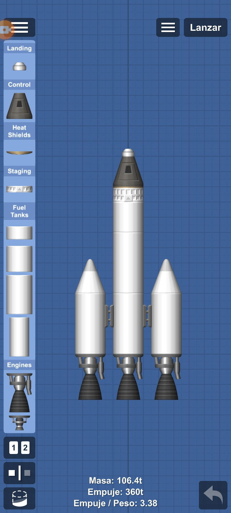
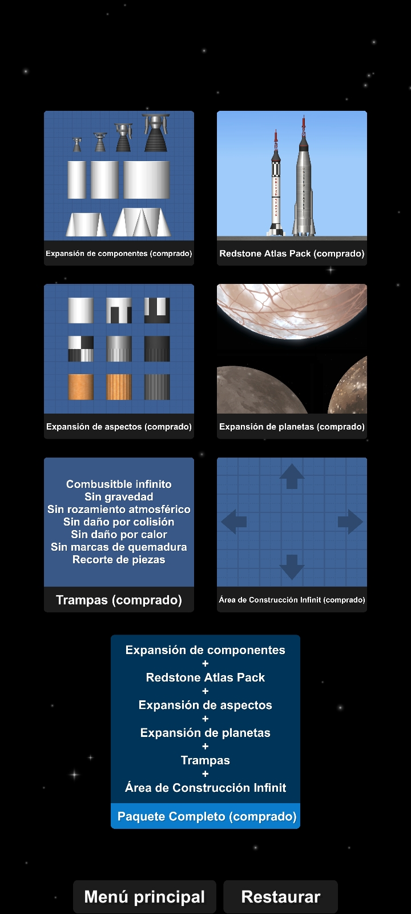
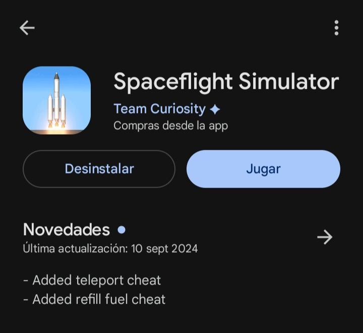
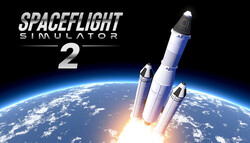

¿Que es Spaceflight Simulator?
Spaceflight Simulator es un juego de cohetes 2D y espacio exterior en el que puedes construir tus propios vehiculos espaciales y probarlos.
¿Como es spaceflight simulator?
El juego tiene varios planetas, en los que están Mercurio, Venus, Tierra, Marte y Jupiter, cada uno con sus respectivas lunas, para llegar a estos planetas, necesitas constuir un cohete que pueda despegar.
¿Como construyo mi cohete?
Para construir tu cohete necesitas ir a los planos de construccion, poner los tanques de combustible, motores, cabina, escudo termico y paracaidas, este es el modelo de un cohete basico
¿El juego es gratis o es pago?
El juego contiene la version de prueba que contiene motores, tanques de combustible y otras cosas basicas, pero si decides comprar la version premium(el juego completo, 14 dolares en uruguay) puedes personalizar los tanques de combustible haci como desbloquear nuevos planetas y motores mas potentes.
¿Cuando y quien creo spaceflight simulator?
Fue creado el 29 de noviembre de 2017 por Stef Morojna
¿Donde puedo instalar spaceflight simulator?
Si decides instalar spaceflight simulator en celular, lo puedes hacer por la play store, pero si decides instalarlo en computadora, tienes que instalarlo en steam, pero cuidado, en computadora no es gratis, te cuesta 14 dolares en uruguay.
¿Hay mas juegos de spaceflight simulator?
Si, pero esta en desarrollo, stef esta desarrollando spaceflight simulator 2, esta vez es en 3D y va a estar para telefono y computadora.
